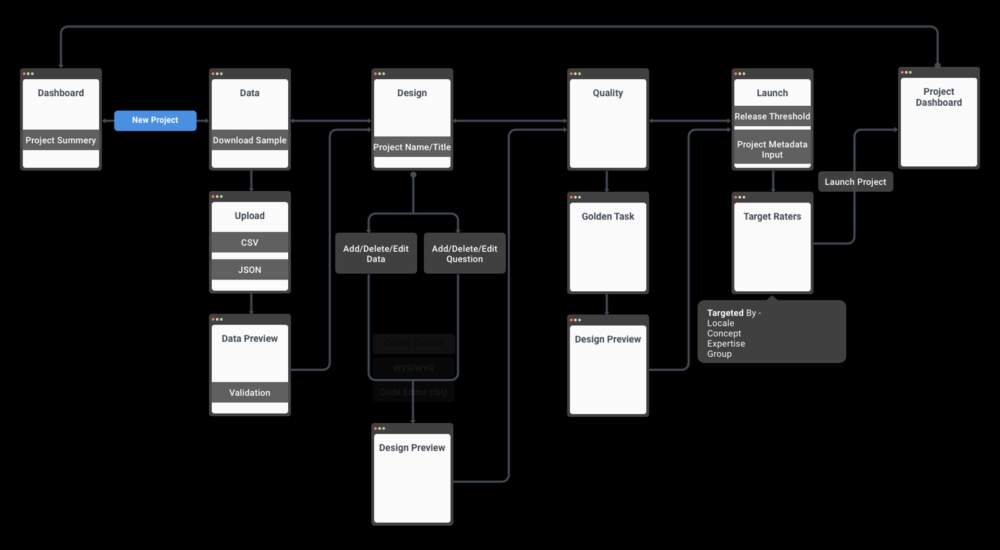
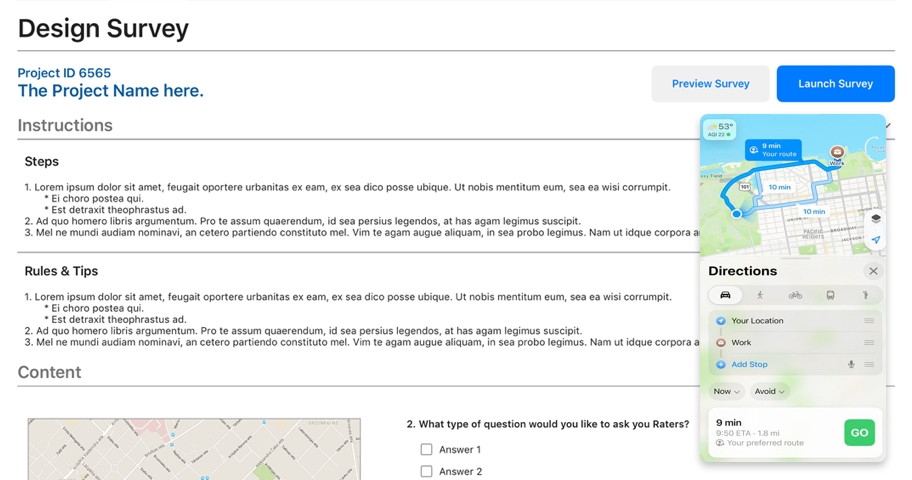
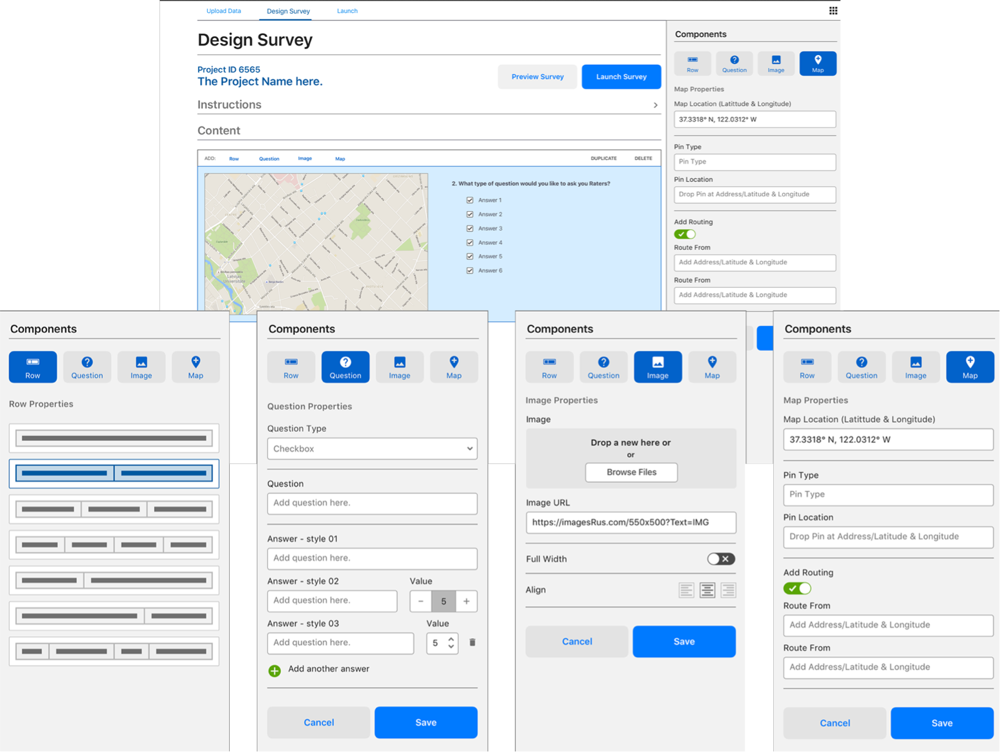

Case Study
Apple Maps Survey Creation Tool
Re-architecting an internal QA workflow to reduce setup errors, strengthen metadata integrity, and improve survey reliability.

My Role
Leading end-to-end UX for a purpose-built Maps QA tool.

Internal QA Tooling
- Led end-to-end UX for Apple Maps survey authoring
- Conducted research, workflow analysis, and heuristic evaluation
- Defined information architecture, authoring flows, and validation patterns
- Created scalable components and interaction patterns
- Partnered with QA leads, PMs, and engineers through delivery
Credits / Team: QA Leads, Internal Tools PM, Engineering, Research
Tools: Sketch, InVision, workflow mapping, heuristic audit
Background
Replacing generic survey tools with a purpose-built QA workflow.

Apple Maps QA relied on third-party survey tools that lacked the workflow logic, metadata support, and quality controls required for internal validation.
Surveys supported geo review and downstream QA—not just form creation. The workflow needed logic, preview, metadata structure, and launch control.
The goal was to simplify authoring, move validation earlier, and create reusable foundations for future internal QA tools.
How might we help Maps QA teams build and launch reliable surveys faster?
Problem
The existing workflow created friction at every stage.

Project setup and upload flows exposed gaps in structure, validation, and reliability.
- Generic tools did not support Apple’s QA logic or data requirements
- Manual setup was slow, repetitive, and error-prone
- Limited preview and validation made broken paths easier to publish
- Metadata gaps weakened triage, reporting, and downstream workflows
- No reusable internal patterns supported consistency or scale
Teams could create surveys, but the workflow lacked the fit, structure, and controls needed for reliable QA.
Discovery
Finding where setup, validation, and metadata decisions failed.

Survey Creation Tools
I mapped the workflow with QA engineers, Product, and Engineering—from project setup through launch—to identify repetitive work, unclear logic, and late-stage risk.
- Interviewed QA engineers about authoring workflows
- Audited exported surveys and setup files
- Identified workarounds that increased setup risk
- Mapped metadata gaps affecting Radar and QA systems
- Reviewed preview, validation, and launch needs
The key insight: quality was being checked too late. Structure and validation needed to happen before launch—not downstream.
Strategy
Designing around Apple Maps QA—not a generic survey builder.
The strategy created a lightweight internal workflow tailored to how surveys were structured, reviewed, and launched.
Priorities included clearer project setup, modular authoring, earlier validation, and stronger metadata.
Reusable patterns ensured future QA tools could build on the same foundation.
Solution
A structured workflow from project setup through monitoring.
The experience connected project creation, authoring, preview, validation, launch, and monitoring in one QA-specific workflow.
A modular builder supported rows, questions, images, and maps while maintaining consistency.
Built-in validation and clearer metadata improved launch readiness and downstream reporting.
System Foundations
Creating reusable patterns beneath the product.
I designed reusable structures for project setup, content blocks, preview states, launch configuration, and status visibility.
Patterns for survey rows, question types, map content, image handling, launch controls, and project status created a scalable foundation.
Impact
Faster authoring with stronger metadata and validation.
- Shortened survey-authoring workflows and repetitive setup
- Reduced setup errors through earlier preview and validation
- Improved metadata integrity and tagging consistency
- Created reusable authoring patterns across QA workflows
- Established scalable patterns for future internal tools
The tool made logic, metadata, validation, and launch readiness clear before production.